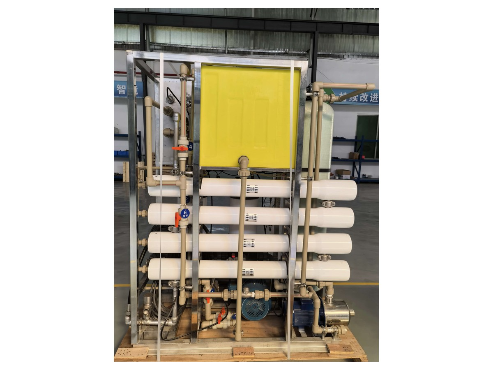
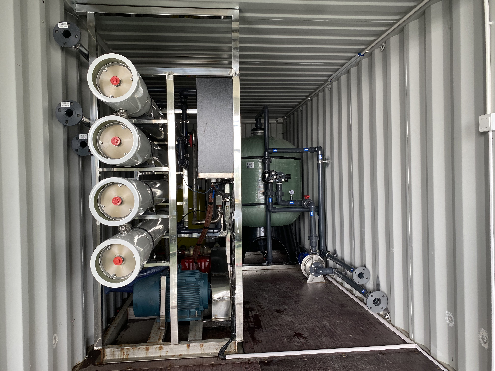
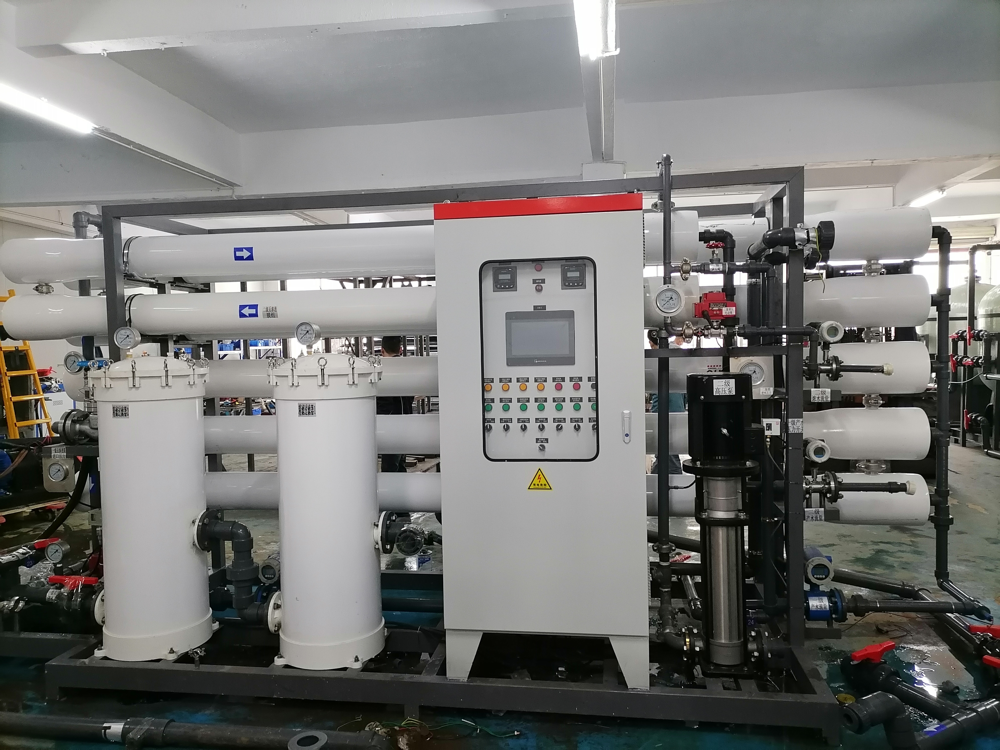

GUWEIENVIRONMENTAL
GUWEIENVIRONMENTALApplications
Island communities, offshore platforms, coastal factories, coastal tourism developments, ports and temporary offshore projects.
Desalination equipment and membrane modules, configured for raw water conditions, intended use and installation space.
Guwei seawater desalination systems use established reverse osmosis membrane separation technology. Skid-mounted units are pre-assembled at the factory for connection to site pipework.

Island communities, offshore platforms, coastal factories, coastal tourism developments, ports and temporary offshore projects.
We supply packaged water treatment equipment for EPC projects and welcome cooperation with contractors and overseas project partners.
Review the configuration against operating conditions. Unspecified parameters remain 待确认.
待确认: Design production, feedwater salinity and intended use.
待确认: Overall dimensions, weight, footprint and power supply.
待确认: Membrane modules, pretreatment, cleaning and monitoring configuration.
Pretreatment works with high-pressure reverse osmosis. Final water quality requirements depend on the intended use.
Please provide raw water quality, intended use and installation conditions to determine post-treatment, power supply and brine discharge arrangements.
| Model | Reference production (tonnes/day) | Reference power (kW) |
|---|---|---|
| GW-FSHB0.5 | 0.5 | 0.75 |
| GW-FSHB1.5 | 1.5 | 1.1 |
| GW-FSHB3 | 3 | 1.5 |
| GW-FSHB5 | 5 | 2.2 |
| GW-FSHB10 | 10 | 5.5 |
| GW-FSHB20 | 20 | 10 |
| GW-FSHB30 | 30 | 15 |
| GW-FSHB40 | 40 | 15 |
| GW-FSHB50 | 50 | 18.5 |
| GW-FSHB60 | 60 | 21 |
| GW-FSHB100 | 100 | 45 |
| GW-FSHB200 | 200 | 60 |
| GW-FSHB500 | 500 | 110 |
| GW-MHB2000 | 2000 | 350 |
Compare production and power to select a reference model. Final configuration depends on raw water conditions and water demand.
Production varies with feedwater salinity, temperature and operating conditions. Configuration must be confirmed for the project.
待确认: GW-FSHB50 overall dimensions and weight.
Images grouped by equipment structure and site layout. Select an image to enlarge.





Share the project type, capacity and contact details so we can discuss your technical requirements.
Online enquiries are not currently available. Please contact us by phone. +86 18026396076